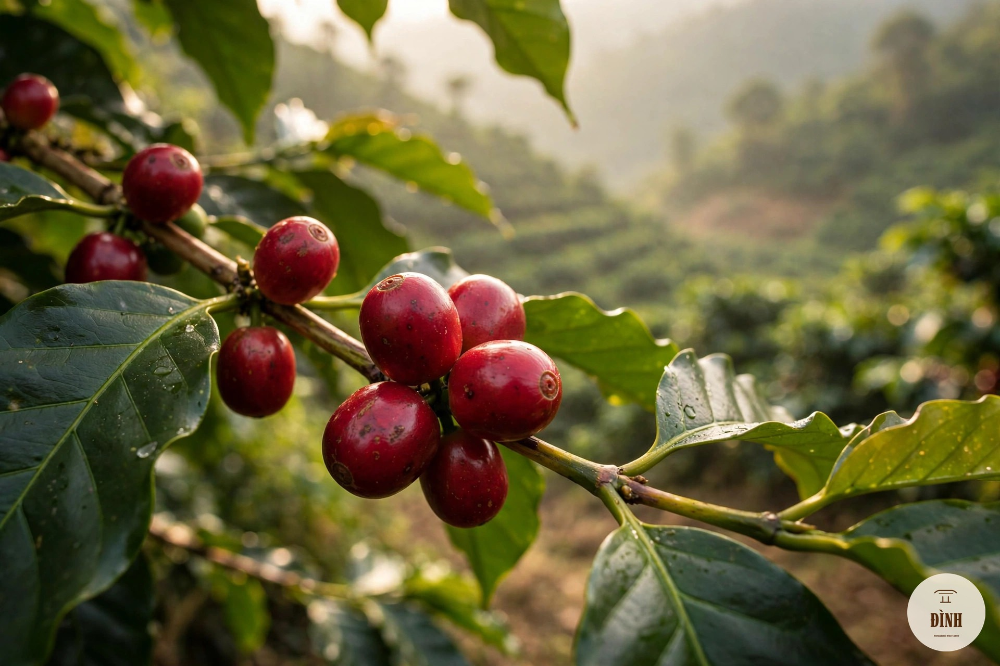
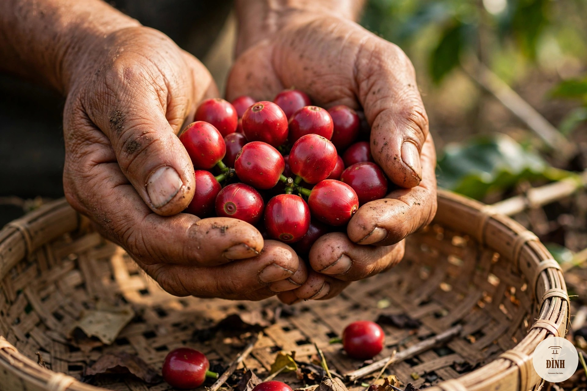
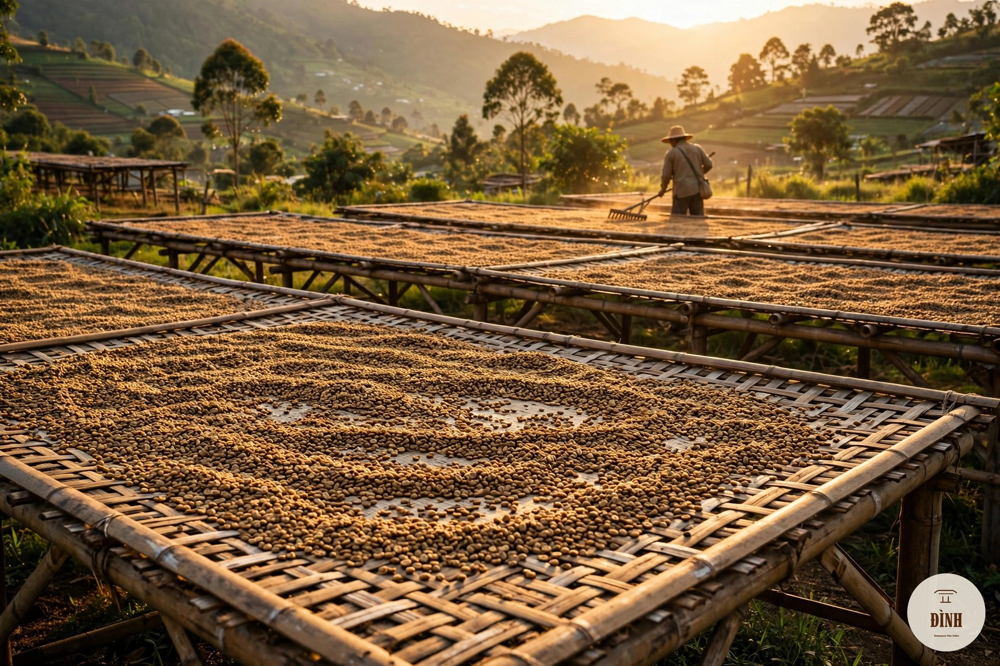
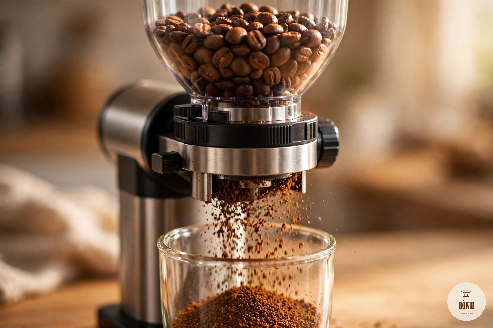
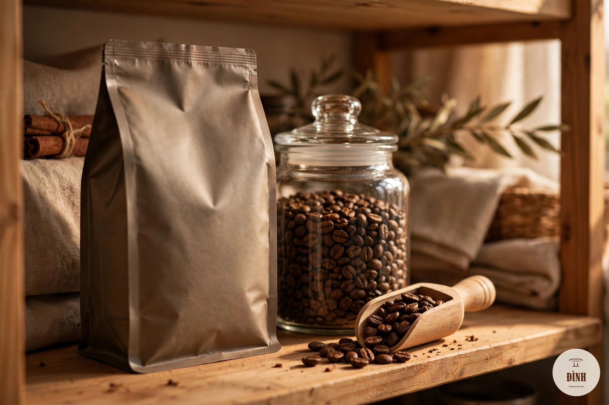
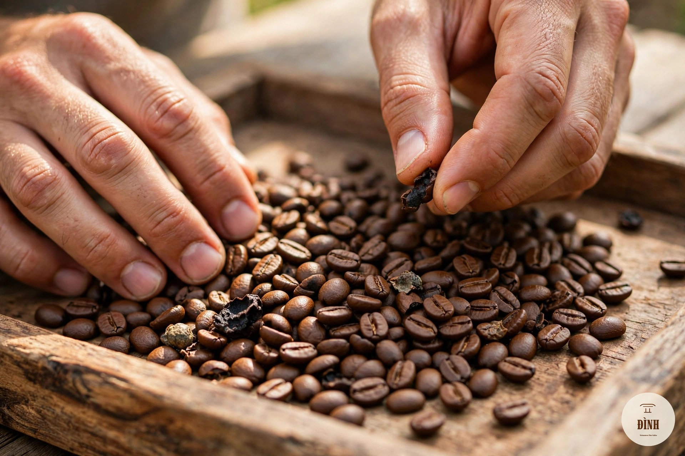
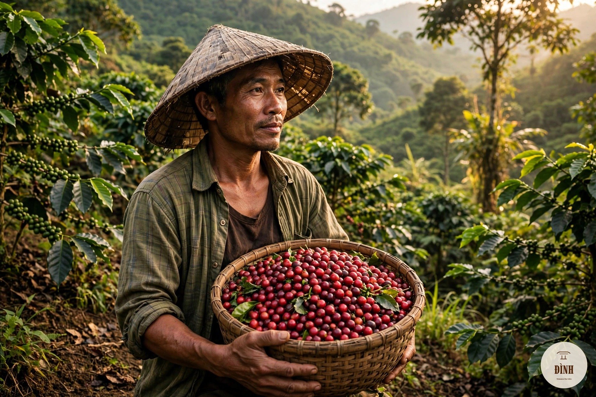

15 bài viết từ cơ bản đến nâng cao — những điều Đình học được sau nhiều năm đứng bếp rang, chia sẻ lại bằng ngôn ngữ đời thường nhất.

Mỗi tách cà phê đã đi qua hành trình cả năm trời — từ bông hoa trắng đến quả cherry chín đỏ.

Mỗi giống một tính cách, một gu riêng — không có giống nào "sang" hơn giống nào.

Robusta tuyển chọn, sơ chế tử tế có thể ngon không kém arabica — đây là cách phân biệt.

Cùng một mẻ cherry, ba cách sơ chế cho ra ba tách cà phê khác hẳn nhau.

Rang nhạt hay đậm không có đúng sai — chỉ có hợp gu và hợp cách pha hay không.

Người thợ rang nghe nhiều hơn nhìn — hai tiếng crack báo hiệu bước ngoặt trong hạt.

Độ đồng đều của bột quyết định chiết xuất — và chiết xuất quyết định tất cả.

Muốn pha ổn định mỗi sáng? Bắt đầu từ cái cân và tỷ lệ vàng của từng cách pha.

Nước dở thì hạt ngon mấy cũng uổng — khoáng chất và nhiệt độ quyết định rất nhiều.

Hạt mới rang đầy CO2 — pha ngay thì crema đẹp mà vị gắt. Hãy kiên nhẫn vài ngày.

Phương pháp chấm điểm chuẩn toàn cầu — và bạn hoàn toàn có thể tự làm tại nhà.

Đừng để tủ lạnh! Những nguyên tắc đơn giản để giữ cà phê tươi ngon lâu nhất.

25 giây quyết định tất cả — cách đọc vị và sửa ba lỗi phổ biến nhất.

Năm dấu hiệu nhận biết bằng mắt thường — để không uống phải hương liệu mỗi ngày.

Khi biết hạt cà phê từ vườn nào, tách cà phê có thêm một lớp hương vị: sự tin tưởng.